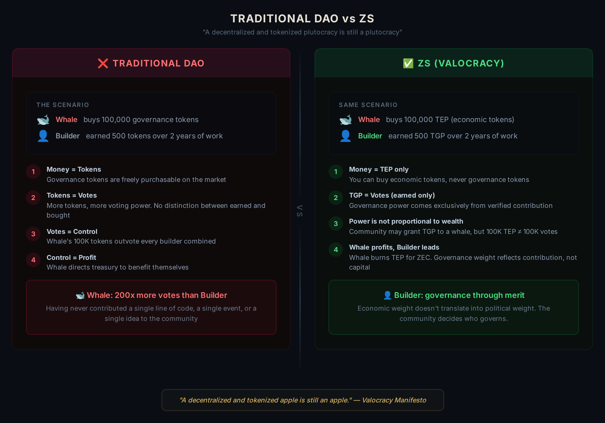
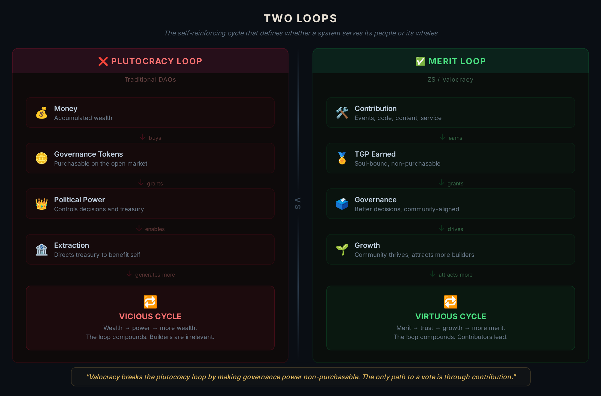

La humanidad está entrando en una era de autoritarismo creciente mientras desarrolla simultáneamente la tecnología más poderosa jamás creada para el control individual: la inteligencia artificial, capaz de procesar volúmenes inimaginables de información a costo casi nulo.
Una de las pocas tecnologías conocidas capaz de contrarrestar esto es la criptografía de conocimiento cero, que preserva la privacidad al garantizar que la información solo pueda ser accedida mediante claves criptográficas. Este proyecto propone construir sobre ella los cimientos para sociedades anónimas, privadas y criptográficamente protegidas.
Hay un momento en que una tecnología deja de ser herramienta y se convierte en el entorno. La electricidad lo hizo. Internet lo hizo. La inteligencia artificial lo está haciendo ahora. Solo que esta vez, la tecnología ve. Lee. Conecta. Cada transacción, cada conversación, cada rostro en una cámara de la calle: analizado y, posiblemente, utilizado.
Balaji Srinivasan lo expresó sin rodeos: "If you're under surveillance, you're not sovereign." Y el mundo avanza en esa dirección: no como ficción, sino como tendencia observable.
Vitalik Buterin advirtió que la economía agéntica de 2026, donde la IA gestiona la mayoría de las transacciones digitales, corre el riesgo de convertirse en capitalismo de vigilancia si se construye sobre fundamentos de código cerrado.
Su respuesta fue convocar un renacimiento cypherpunk: no como postura antisistema, sino como garantía de que la infraestructura digital del futuro siga siendo un terreno neutral para la creatividad humana y la disidencia. La privacidad no es una característica deseable. Es un prerrequisito para la libertad.
Si la IA escala sin un contrapeso criptográfico, el resultado es una asimetría de poder sin precedentes. Si el ZK avanza a la par, hay equilibrio. Sin ese equilibrio, lo que nos espera podría ser distopía.
En el terreno de la construcción de comunidades, las soluciones DAO existentes simplemente han replicado el viejo mundo en una forma peor: menos privacidad en blockchains públicas, más lobby, y una traducción directa de riqueza en poder mediante la posibilidad de comprar tokens de gobernanza.
Esta es la brecha que este proyecto aborda. Construir infraestructura para sociedades donde el anonimato es un derecho, la privacidad es el estándar y la criptografía es resistente. Todo ello construido sobre Valocracy, un sistema basado en blockchain donde los derechos económicos y de gobernanza son distintos y solo se obtienen mediante esfuerzo y contribución. No se puede comprar el camino al poder.
El caso de uso primordial para esta tecnología es una Network Society, y ninguna comunidad está más preparada para dar este salto que la de Zcash.
Sobre Network Societies y Network States
"A network state is a social network with a moral innovation, a sense of national consciousness, a recognized founder, a capacity for collective action, an in-person level of civility, an integrated cryptocurrency, a consensual government limited by a social smart contract, an archipelago of crowdfunded physical territories, a virtual capital, and an on-chain census that proves a large enough population, income, and real-estate footprint to attain a measure of diplomatic recognition." — The Network State, Balaji Srinivasan
La definición de Balaji del Network State es poderosa y destaca la necesidad de "un fundador reconocido". Los fundadores inspiran comunidades y aportan visión, dirección y coordinación.
Sin embargo, los fundadores no necesariamente permanecen alineados con los mejores intereses de la sociedad a medida que esta crece, lo que puede convertirlos en un punto único de fallo. Además, pueden convertirse en un blanco fácil. Por eso creemos que mecanismos meritocráticos formales que permitan la emergencia de nuevos líderes deberían ser un componente estándar de la gobernanza de los network states a medida que estas sociedades crecen.
Proponemos la Zcash Network Society: la primera sociedad descentralizada y anónima construida sobre la infraestructura de privacidad de Zcash, basada en Valocracy, un marco de gobernanza innovador que busca implementar sistemas verdaderamente meritocráticos, con especial atención a una mejor separación de los poderes económicos y políticos dentro de un arreglo social.
En este contexto, las pruebas ZK proporcionan la infraestructura descentralizada de privacidad necesaria para transformar la visión de Balaji del Network State en una realidad social permissionless, resiliente y genuinamente soberana, ejecutada y coordinada mediante código.
Imaginamos un marco social organizado digitalmente en el que los fundadores pueden, y deben, servir como líderes importantes en las etapas tempranas, mientras establecen las condiciones estructurales para que nuevos líderes emerjan orgánicamente a través de sus contribuciones a lo largo del tiempo, ganando progresivamente legitimidad política y derechos económicos dentro de la comunidad.
En un sistema así, los fundadores que dejen de contribuir o intenten actuar contra sus propias comunidades perderían naturalmente no solo relevancia, sino su propia capacidad de ejercer poder. Esto es esencial para evitar que el liderazgo se cristalice en privilegio permanente.
Las capacidades de privacidad de Zcash también juegan un papel central en esta configuración. En los arreglos sociales digitales existentes, sobre todo las DAOs, el poder de gobernanza típicamente proviene de quién eres, a través de identidad o pseudo-identidad, o de cuánto posees, a través de poder financiero.
Incluso un contribuidor anónimo ampliamente conocido puede estar sujeto a presión pública o lobby ante decisiones importantes si la votación es transparente. Como resultado, puede verse desincentivado de tomar decisiones impopulares pero necesarias que beneficiarían a la comunidad.
En una Zcash Network Society, los líderes emergen de sus contribuciones. Si es así, la confianza debería derivar de ese historial de contribución y no de la evaluación pública de cualquier decisión particular.

Cómo Funciona
La implementación es basada en blockchain, con un sistema de doble token. Primero, los derechos económicos y de gobernanza se obtienen mediante esfuerzo y contribución, no únicamente mediante capital.
Cada contribución verificada genera dos tokens para los miembros de la comunidad:
Tokenized Governance Power (TGP)
Tokens soul-bound e intransferibles que otorgan derechos de voto proporcionales al TGP total acumulado. Se obtienen exclusivamente mediante contribución verificada. No pueden comprarse, venderse ni heredarse. Los contribuidores activos ganan continuamente nuevos TGP, diluyendo naturalmente a quienes dejan de contribuir. Sin gobernantes permanentes — solo constructores activos.
Tokenized Economic Power (TEP)
Tokens transferibles que representan una participación proporcional en la tesorería de la comunidad. Pueden mantenerse, canjearse o comerciarse. Alguien con mucho capital puede comprar TEP y beneficiarse del crecimiento de la tesorería, pero no puede comprar influencia en la gobernanza. La capa económica se rige por el mercado; la capa política, no.
La privacidad es el cimiento, no una característica adicional. La votación blindada significa que nadie puede ver cómo votaste, eliminando la coerción y el comportamiento de manada. Las firmas de umbral FROST protegen a los operadores de la tesorería. Los contribuidores reciben pagos sin revelar su identidad. La sociedad opera con transparencia en sus reglas y privacidad en sus personas.
Esto puede verse, en un sentido más amplio, como ciudadanía progresiva ganada por mérito. Los tokens de gobernanza pueden desbloquear acceso: canales de comunicación, espacios de trabajo, eventos y residencia. Cuanto más contribuyes, más perteneces: no por permiso, sino por prueba de trabajo. Tu billetera es tu pasaporte.
Identidad pseudónima mediante pruebas de conocimiento cero: la ciudadanía en la Zcash Network Society no requiere revelar quién eres. Usando protocolos de identidad basados en ZK compatibles con smart contracts EVM, los ciudadanos pueden demostrar que son seres humanos únicos, que pertenecen a la sociedad y que han contribuido — sin revelar ninguna información personal. Lo que importa es lo que has construido, no quién eres. Esto se alinea con la visión de Vitalik Buterin de "identidad pluralista": múltiples capas de verificación, ninguna fuente única con autoridad absoluta y alto costo para ataques Sybil.
La comunicación privada entre ciudadanos es posible. Los memos cifrados en Zcash habilitan una capa de mensajería nativa y privada. En el foro, la identidad se verifica por el peso de gobernanza, no por datos personales. Un ciudadano con una cantidad relevante de tokens de gobernanza publica: ves su posición, no su nombre.
El objetivo es la creación de una economía autosustentable. Al inicio, la tesorería puede financiarse con grants del protocolo, alianzas y depósitos de la comunidad. Con el tiempo, puede financiarse participando en actividades económicas habilitadas por la propia comunidad. Los contribuidores obtienen tokens canjeables por ZEC en la tesorería.
Hoy, Zcash cuenta con un fondo lockbox en crecimiento, el 12% de cada recompensa de bloque acumulada desde noviembre de 2024. La comunidad ha debatido quién debería decidir cómo se asignan los fondos. Valocracy ofrece un marco para distribuirlos con base en contribución verificada. Queremos que esto ocurra con total privacidad. Podría probarse a una escala mucho menor y escalarse cuando esté listo.
Para Zcash, esto es una vitrina viva de su infraestructura de privacidad en acción: cada voto blindado, cada contribución privada, cada coordinación anónima demuestra que la tecnología ZK funciona para gobernanza real, no solo para transacciones financieras. Y crea un modelo replicable: si una Zcash Network Society funciona, cualquier comunidad puede hacer fork del marco.
Por Qué Ahora
En la Era Industrial, el recurso escaso era el capital. Más recientemente, lo era la inteligencia, pero ahora estamos en la era de la inteligencia artificial, donde ella misma escala a costo casi nulo. La confianza, en cambio, no escala. Las sociedades que pierden confianza pierden estabilidad. La confianza debe construirse, y los sistemas que usamos para construirla necesitan cambiar.
Lo vemos en todas partes: instituciones cuestionadas, elecciones impugnadas, sistemas financieros puestos en duda. Los viejos mecanismos para construir confianza colectiva — tribunales, bancos, burocracias — fueron diseñados para un mundo donde la vigilancia era costosa y la privacidad era lo predeterminado. Ese mundo ya no existe.
El 6 de febrero de 2026, Vitalik Buterin donó a Shielded Labs para financiar Crosslink, la actualización de consenso de Zcash. Anteriormente, propuso "stewards" de IA para votar en nombre de los miembros de DAOs, usando pruebas de conocimiento cero para proteger la identidad de los votantes y prevenir la coerción. Exactamente el problema que la estructura que proponemos resolvería con total anonimato.
Posteriormente, el 18 de febrero, Balaji Srinivasan publicó un video titulado "Zcash or Communism", argumentando que la IA ha transformado la vigilancia de un proyecto a escala estatal en un servicio bajo demanda. "Any scrap of information online can now be integrated, digested, and synthesized to form a dossier more complete than anything the Soviets could ever dream of."
La convergencia es clara: voces influyentes — no solo Vitalik y Balaji — pidiendo privacidad. Es la infraestructura sobre la cual las sociedades libres deben construirse.
Incluso dentro de la propia comunidad de Zcash, sigue existiendo una brecha entre el ethos y la práctica. En una votación de gobernanza reciente, un solo tenedor movió 20.000 ZEC en la cadena transparente: cada nodo de la red lo observó, la gente lo capturó y comentó en X. Los insiders podrían saber a quién presionar por esos votos.
En un protocolo construido para la privacidad, la gobernanza todavía opera a la vista de todos. La comunidad que fue pionera en transacciones blindadas necesita la infraestructura para hacerlo posible. Este proyecto la construye.
Más allá del propio Zcash, futuras comunidades descentralizadas y anónimas — o incluso empresas — necesitarán estas herramientas a su disposición.
El linaje criptográfico ya está consolidado. FROST v3 se está finalizando para producción. El campo de memos cifrados ya permite comunicación privada entre ciudadanos. Cada pieza del rompecabezas existe.
Valocracy ya ha sido construida y desplegada anteriormente: en los protocolos Moonbeam y Linea, y en una Pop-up city (Ipê City) en Brasil, con usuarios reales completando tareas reales, ganando tokens de gobernanza reales y participando en votaciones reales. Funcionó a pequeña escala.
Pero nunca estuvo en su verdadero hogar, porque el ingrediente que faltaba siempre fue la privacidad. Zcash es ese hogar. El momento es ahora.
¿Qué es Valocracy?
Valocracy es un marco social, económico y político diseñado para resolver la falla fundamental en cómo se organizan las comunidades digitales: la mezcla entre poder económico y poder político.
En las DAOs tradicionales, la gobernanza sigue la misma lógica de las finanzas tradicionales: más dinero equivale a más poder político. Puedes comprar tokens, comprar votos, comprar influencia. Una plutocracia descentralizada y tokenizada sigue siendo una plutocracia.

Valocracy parte de una pregunta diferente. No "¿cómo descentralizamos?", sino "¿por qué necesitamos descentralizar, y qué exactamente necesita cambiar?" La respuesta: necesitamos romper el ciclo autorreforzante donde la riqueza acumulada se traduce en poder político, que a su vez se usa para acumular más riqueza.
El marco separa el poder en dos instrumentos distintos y diseñados con propósito específico:
Tokenized Governance Power (TGP): tokens soul-bound e intransferibles que representan la voz política dentro de la comunidad. El TGP se obtiene exclusivamente mediante contribución verificada: completar tareas, construir herramientas, crear contenido, participar en la gobernanza, o cualquier actividad que la comunidad defina como valiosa. No puede comprarse, venderse ni heredarse. Dado que se acuñan continuamente nuevos TGP para contribuidores activos, quienes dejan de contribuir son naturalmente diluidos con el tiempo. El sistema se autocorrige: la participación activa es continuamente recompensada, mientras que la participación pasada es respetada pero progresivamente representa una fracción menor de la gobernanza. Las comunidades pueden opcionalmente añadir decaimiento explícito, pero el diseño central ya asegura que la gobernanza refleje la contribución actual.
Tokenized Economic Power (TEP): tokens transferibles que representan una participación proporcional en la tesorería de la comunidad. Cuando un contribuidor completa una tarea, recibe tanto TGP (político) como TEP (económico). El TEP puede mantenerse, canjearse por su parte proporcional de la tesorería, o comerciarse en un mercado secundario. Alguien con mucho capital puede comprar TEP y beneficiarse del crecimiento de la tesorería, pero no puede comprar influencia en la gobernanza. La capa económica se rige por el mercado; la capa política, no.
Esta separación crea un sistema en el que los individuos están incentivados a generar valor constantemente, recompensados por su capacidad de contribuir al colectivo en lugar de extraer de él.
Valocracy es un paso más en el esfuerzo colectivo por construir organizaciones donde el mérito, y no el dinero, determine quién lidera.
Futuro y Reflexiones Finales
La Zcash Society (ZS) no es un concepto futuro. Zcash Brasil, una comunidad establecida con grants existentes, infraestructura y contribuidores activos, se ha comprometido a operar dentro del marco Valocracy como la primera implementación. Eventos presenciales, activaciones comunitarias y coordinación de contribuidores servirán como el campo de pruebas inicial: donde las contribuciones son visibles, verificables y recompensadas mediante el sistema de doble token.
Este primer despliegue validará el modelo económico, pondrá a prueba los mecanismos de gobernanza y producirá la documentación necesaria para que cualquier comunidad replique el marco. El objetivo no es construir una sola sociedad, sino construir un protocolo: open-source, forkeable y adaptable a cualquier comunidad que valore el mérito sobre el dinero y la privacidad sobre la exposición.
El código, el modelo de gobernanza y la documentación serán open-source. Cada decisión, cada iteración, cada lección será visible para cualquiera que quiera aprender de ello, hacer fork o mejorarlo.
Si la Zcash Network Society funciona, se convierte en un template. Cualquier comunidad, en cualquier lugar, puede desplegar el mismo marco: gobernanza privada, ciudadanía basada en mérito, separación de poder económico y político.
Si eres desarrollador, investigador de gobernanza o constructor de comunidades que cree que el mérito debería pesar más que el dinero: estamos construyendo esto abiertamente y queremos que participes. Contáctanos, únete a la conversación y construyamos juntos.
La privacidad no es una característica que se añade a una sociedad. Es el cimiento sobre el cual se construye una.
Referencias
- Balaji Srinivasan, The Network State
- Balaji Srinivasan, "Zcash or Communism," 18 de febrero de 2026
- FROST: Flexible Round-Optimized Schnorr Threshold Signatures
- Shielded Labs, "Vitalik Buterin Donates to Support Crosslink Development," 6 de febrero de 2026
- Valocracy Manifesto
- Vitalik Buterin, "Does digital ID have risks even if it's ZK-wrapped?" 28 de junio de 2025
- Vitalik Buterin, "We need more DAOs — but different and better DAOs," 21 de febrero de 2026
- Zcash Lockbox, ZIP-234
- Zcash Protocol Specification